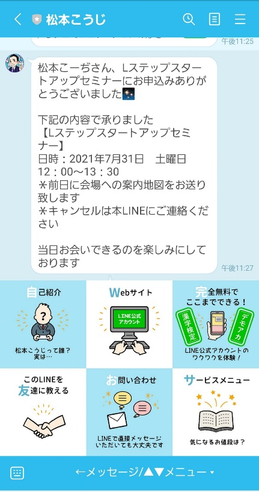
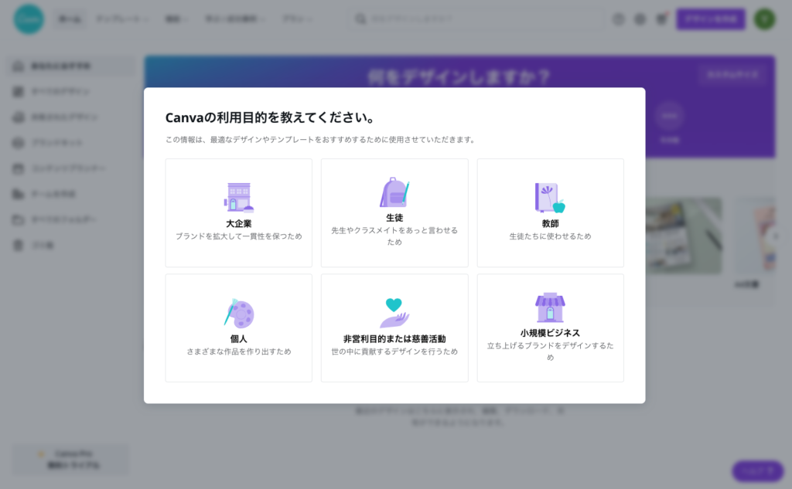
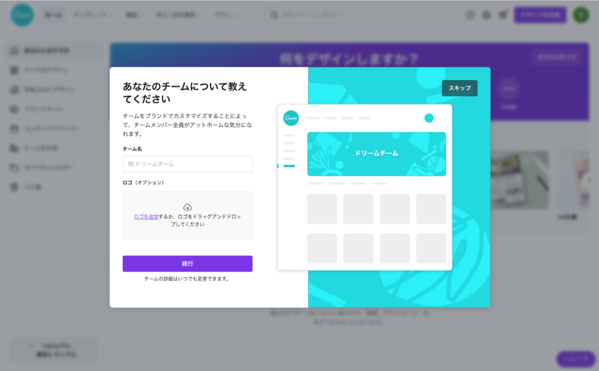
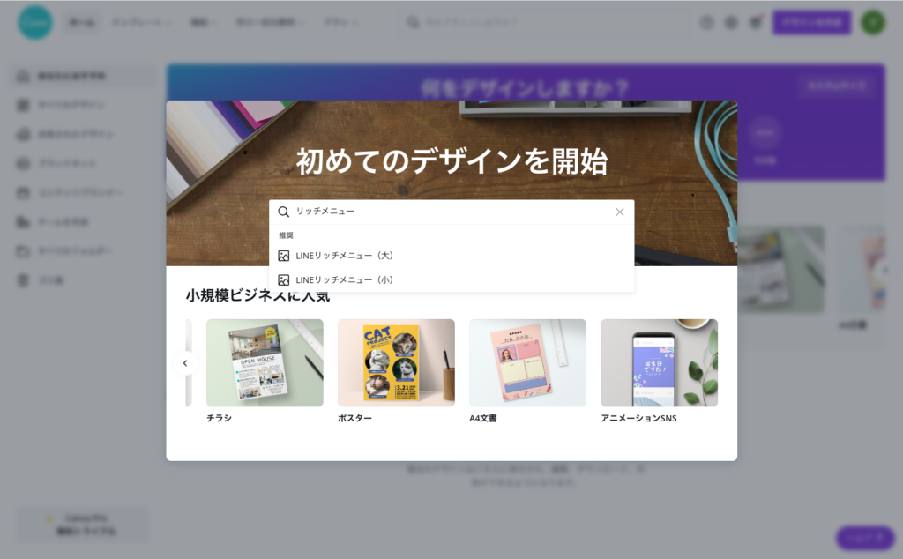
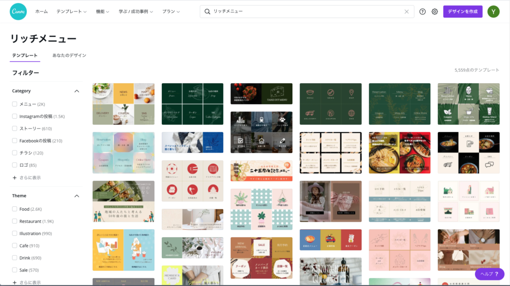
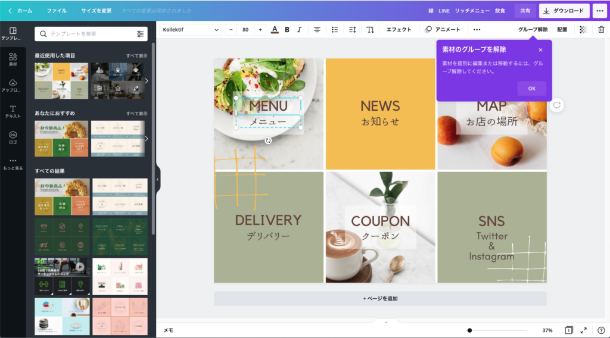

#034_リッチメニューを自分でデザイン！２

こんにちは！今日は、「リッチメニュー 」を自分で簡単に作成できるツールをご紹介します！
LINE公式アカウントを始めるにあたり、まず必要になるのがリッチメニュー 。最近は「LINEクーポン」など、知らないうちに登録されてしまった公式アカウントから自分のスマホに定期的に配信が来るので、皆さん一度は目にしたことがあるでしょう。ちなみに、このブログを書いているmatsumotoのリッチメニュー はこんな感じ。

こんな風に、matsumotoのトーク画面を開いていただくと、下に６分割のリッチメニュー が表示されています。
過去にも一度「Fotojet」というツールを使ってリッチメニュー を自分でつくる、という記事を投稿していますが、PC作業に慣れていない方にとっては難しい場合もあり、最終的には「詳しい人に依頼するのが一番！」としめくくりました。
ただ、プロに頼むと当然お金がかかります。相場的には大体6千円〜ぐらいからでしょうか。事業やお店を始めたばかりの個人事業主などにとっては、どんな出費も節約できるものならしたいでしょう。
今回ご紹介する「Canva」には様々なデザインテンプレートがあり、最近LINE用のテンプレートが実装されました！サイトのガイダンスに従って作業するだけで完成度の高いリッチメニュー を自分で作ることができます。
Canvaなら、最初の1ヶ月間は費用も発生せず、完全無料で自分だけのリッチメニューを作成することができますので、ぜひ利用してみてください！
※登録方法は、メールアドレスでの登録がおすすめです。有料化される直前にメールで連絡が来ますので、ご注意ください。そのタイミングで解約しないと、毎月12,000円/月の利用料金がかかります。
※リッチメニュー にロゴや商品写真などを使いたい場合は、あらかじめ10KB〜1MB程度のpng形式かjpg形式の画像をご用意ください。
(１)canvaにユーザー登録する
まずはcanvaのサイトにアクセスし、ユーザー登録をします（登録しないと使えません）。GoogleやYahoo!アカウントなどの登録方法が表示されますが、「メールアドレスで登録」を選び、かんたんな個人情報などを登録します。登録確認のコードを知らせるメールが届きますので、そのコードでログインし、クレジットカード情報など入力すれば登録完了！

そこから「利用目的を教えてください」などというダイアログが開きますが、ひとまず「小規模ビジネス」などを選択しておけば大丈夫です。「スキップ」というボタンが表示されるものについては、スキップしましょう。

（２）リッチメニュー 作成に進む

ユーザー登録を済ませたら、いよいよデザイン開始！「初めてのデザインを開始」というダイアログと検索窓が表示されますので、「リッチメニュー」と入力し、下に表示される「LINEリッチメニュー（大）」を選択します。他にも、「LINE」と入力すればリッチメッセージやLINE広告など、様々なテンプレートがありますので、興味のある方はぜひ利用してみてください。（ただし無料期間の１ヶ月以内に作成を済ませましょう 笑）。
これってメチャクチャ助かりますよね！既にLINE公式アカウントを運用してる方なら共感してもらえると思いますが、パソコン操作自体はYouTubeなどで学べても、リッチメッセージなどを自分でデザインするって難しいです。リッチメニューに関してはネット上でもちらほら情報がありますが、canvaなら全部おまかせ！
（３）お気に入りのデザインを選ぶ

あとはズラーっと並ぶテンプレートからお好きなデザインを選び、ガイダンスに従って作業するだけ！デザインが完成したら、ダウンロードしてLINE Official Account Managerで登録作業をおこなってください。

私もデザインに関してはド素人で、以前に自分でリッチメッセージなど作ってみたのですが、まさに『昭和の広告』としか言いようのない出来栄えになり自分自身で愕然としました。
なのでお気に入りのデザインがあれば、レイアウトや使えるパーツはそのまま使用し、文字や写真だけを入れ替えるだけで簡単にデザインが完成するCanvaはおすすめです。是非いちど試してみてください。
まずはLINE公式アカウントを開設しましょう！
●LINE公式アカウントの開設方法はこちら
●LINE公式アカウントをオススメする理由はこち
●LINE公式アカウントでできることはこちら
●Lステップでできることはこちら